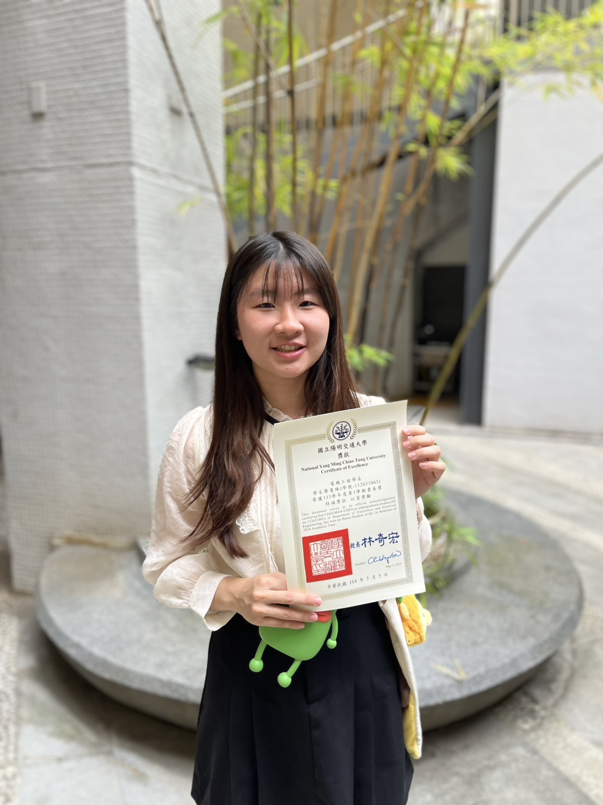

👋 Hello, I'm
Man-Chen (Mandy) Liao
I am a senior student majoring in Electrical Engineering at National Yang Ming Chiao Tung University (NYCU) [Rank: 1/48, CGPA: 4.25/4.3].
Deeply passionate about bridging theoretical circuit principles with practical IC design, my research interests center on Analog IC Design and Bioelectronics.
Looking ahead, I aim to pursue a Ph.D. in the United States to further deepen my research in analog circuit design and its real-world engineering applications.

Innovate & Create